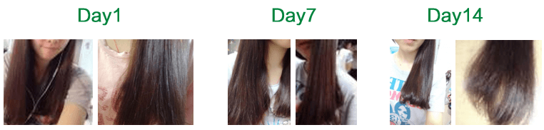
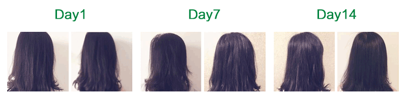
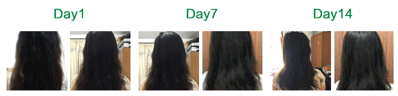

20岁大学在读女生
开始用护发素。如同往常用量，护发素相对于洗发水来说比较粘稠，但是可能头发比较容易吸收，感觉推了左边头发右边就不够用。
26岁干性毛躁发质
这款产品比我想象中的有效果，持续的使用会对头发又很大的改善。主要是头发摸起来比以前更加顺滑了，头发晾干之后发梢的干燥也比感觉有所改善，头皮也感觉比较清爽.

24岁油性发质
头发确实挺柔顺有光泽，清爽干净，闻起来依旧清新的奶香味，洗发水能修复受损发质

28岁年轻妈妈
发质可以说比之前的好多了，头皮没有痒，很轻松，淡淡香味，摸起来也很顺滑，很自然，没有用任何护发素类的东西，感觉很清晰，舒服。
25岁染烫枯燥发质
跟自己第一次洗头前拍的照片对比，还是很明显的，头发不那么毛躁了，就感受上来说，柔软蓬松了不少，而且掉发也明显减少了。
26岁职业白领
就算是流汗之后 头发还留有余香，而且也不会油腻，挺清爽的，也不容易打结。早上醒来的时候头发很柔顺，睡醒头发不会乱，一梳就顺！